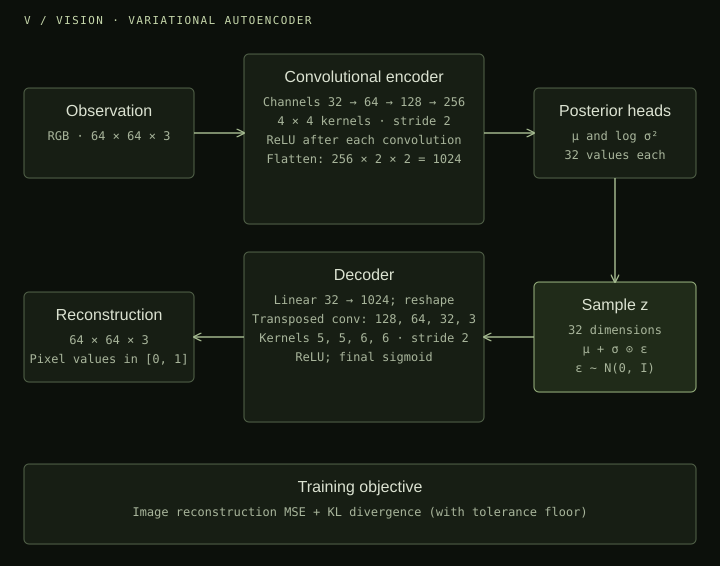
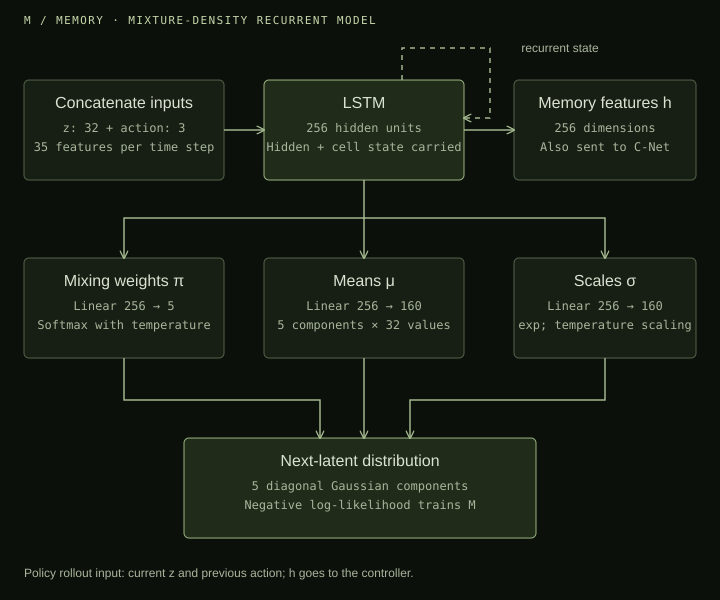
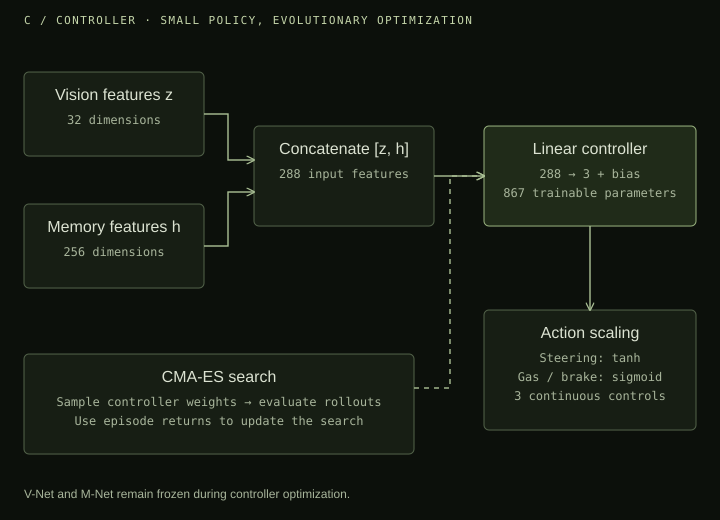
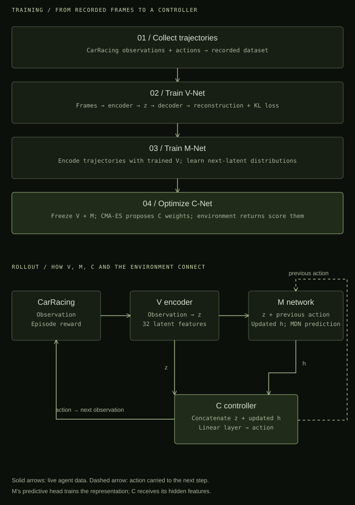

From pixels to a model of the world
Lit World Models is my educational reimplementation of Ha and Schmidhuber’s World Models in PyTorch and PyTorch Lightning. The project breaks a visual control problem into three parts: compress what the agent sees, learn how that representation changes, and choose actions from that compact state.
Vision: learning a compact representation
The vision network is a variational autoencoder, or VAE. It encodes an image into a latent vector and reconstructs the observation from that representation. The training objective combines image reconstruction error with a KL-divergence term. In the repository’s default configuration, the latent vector has 32 dimensions.

V-Net’s forward pass encodes an observation and reconstructs it from the sampled latent vector. Encoder and decoder layer definitions are omitted here.
class Vnet(Network):
def __init__(self, cfg: MasterConfig) -> None:
super().__init__(cfg)
self.encoder = self.Encoder(cfg)
self.decoder = self.Decoder(cfg)
def forward(self, x: torch.Tensor) -> torch.Tensor:
z, mean, logvar = self.encoder(x)
y = self.decoder(z.clone())
return y, z, mean, logvarMemory: predicting what comes next
The memory network combines an LSTM with a mixture density network. It takes latent observations and actions as inputs and predicts a probability distribution over the next latent state. This makes the dynamics model probabilistic: it can represent several possible next states rather than only a single point prediction. The default configuration uses a 256-dimensional recurrent hidden state and five Gaussian mixture components.

M-Net concatenates latent observations with actions, runs the sequence through the LSTM, and predicts the next-state distribution with the mixture density head.
class Mnet(Network):
def __init__(self, cfg: MasterConfig = None) -> None:
super().__init__(cfg)
self.lstm = self.LSTM(cfg)
self.mdn = self.MDN(cfg)
def forward(self, z: torch.Tensor,
a_prev: torch.Tensor) -> Tuple[
torch.distributions.MixtureSameFamily, torch.Tensor]:
za = torch.cat([z, a_prev], -1)
h, _ = self.lstm(za)
z_next_est_dist = self.mdn(h)
return z_next_est_dist, hControl: acting on vision and memory
The controller is a small fully connected network that uses the encoded observation together with the memory state to produce an action. Its weights are optimized with Covariance Matrix Adaptation Evolution Strategy (CMA-ES), rather than gradient descent. The included configuration targets CarRacing-v2, with steering, acceleration, and braking actions.

The core CMA-ES search loop, condensed from the controller trainer. Returns are negated because the optimizer minimizes its objective.
# Initialize the search over controller parameters.
self.alg = cma.CMAEvolutionStrategy(
[0] * self.event_space,
self.cfg.INIT_SIGMA,
{'popsize': self.cfg.POP_SIZE},
)
# Evaluate candidate controllers, then update the search.
for g in range(self.generations):
population = self.alg.ask()
scores = self._evaluate_population(population)
self.alg.tell(population, -scores)Putting the training stages together
The implementation separates data collection, vision training, memory training, and controller optimization. PyTorch Lightning modules handle vision and memory training, while controller optimization uses a dedicated evolutionary training module. Configuration files expose the model dimensions and training settings so the components can be studied and changed independently.

The repository exposes each training stage through runner.py. Set the dataset paths and checkpoint references in the YAML configuration as you progress between stages.
# Configure dataset paths in master-config.yml first.
python runner.py --config master-config.yml --collect-data
python runner.py --config master-config.yml --train-vnet
# Set M-NET.VNET_CKPT to the trained vision checkpoint.
python runner.py --config master-config.yml --train-mnet
# Set C-NET.VNET_CKPT and C-NET.MNET_CKPT.
python runner.py --config master-config.yml --train-cnetWhy I built it
Reimplementing the paper makes its central idea concrete: an agent can act using a learned representation of its environment instead of processing every observation as an isolated image. This project is an exploration of the original World Models architecture and a foundation for understanding model-based reinforcement learning.
Code & reference
Lit World Models on GitHub
World Models — David Ha & Jürgen Schmidhuber